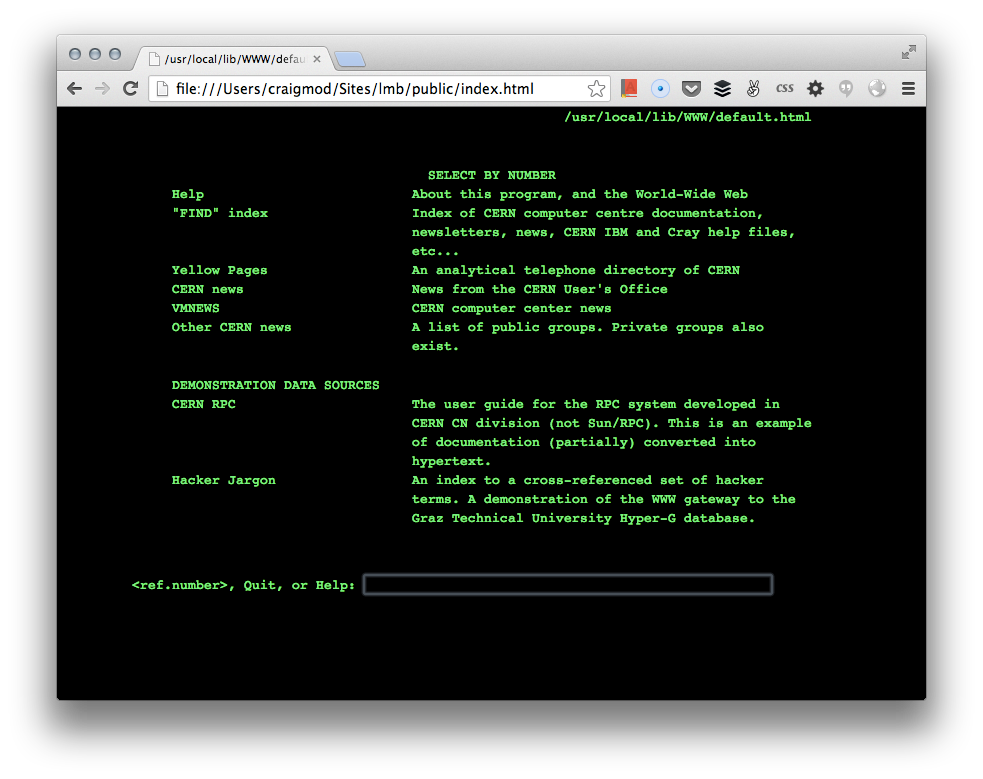

The line-mode browser, launched in 1993, was the first readily accessible1 browser for what we now know as the world wide web. It was not, however, the world’s first web browser. The very first web browser was called WorldWideWeb2 and was created by Tim Berners-Lee in 1990.
But WorldWideWeb only worked on the NexT operating system. WorldWideWeb was a great piece of software, but it was important that the web should be accessible to many kinds of computers, not just NexT machines.
That’s where the line-mode browser came in. It was the first web browser with a cross-platform codebase so it could be installed on many different kinds of computers. It was a relatively simple piece of software with a very basic interface, but in the early days of the web, it was instrumental in demonstrating the power of this new medium.
You’ve come a long way, browser
Web browsers today are quite powerful. They can run on all sorts of devices and display all kinds of content from plain text to images and video—you can even play games in modern web browsers.
It wasn’t always this way. The line-mode browser could only display text. You couldn’t even use a mouse to click on links—you had to type in everything using a keyboard …even if you just wanted to follow a link!
It sounds like a clunky experience (it was!) but wouldn’t you like to get a feeling of what it was like to browse the web back then? Well, thanks to the power of modern web browsers, you can.

Launch the line-mode browser simulator!
An unbroken line
A good place to start your line-mode browsing is with the first web page ever published. Using the line-mode browser simulator, you can see how this page would have looked over twenty years ago.
What’s amazing is that the first web page still works in a modern browser. You’ll also find that many modern web pages will work in the line-mode browser. They won’t look the same, and you won’t see any images, but they’re still readable.
That’s because HTML is backwards-compatible by design. The vocabulary has grown in scope since Tim Berners-Lee first introduced just a handful of tags but new browsers still understand all the old tags, and the line-mode browser simply ignores any tags it doesn’t recognise.